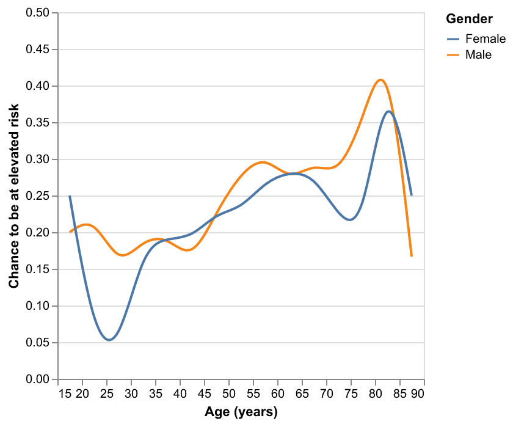

Age and gender
The figure is a line graph of lung cancer risk by age and gender. The data is binned in 3-year groups and interpolated to reduce outlier impact. While inconsistent at certain ages, there is an overall trend that lung cancer risk increases with age. Males also have an increased risk compared to females, though the difference is relatively small.

What if I quit today?
This interactive chart can help someone who is considering quitting to see the impact if they quit at the current moment. This can help someone who is unsure about the current and future risks of their smoking habits. With the sliders, someone can fit their habits and see how if they continue to smoke, the risks continue to escalate.